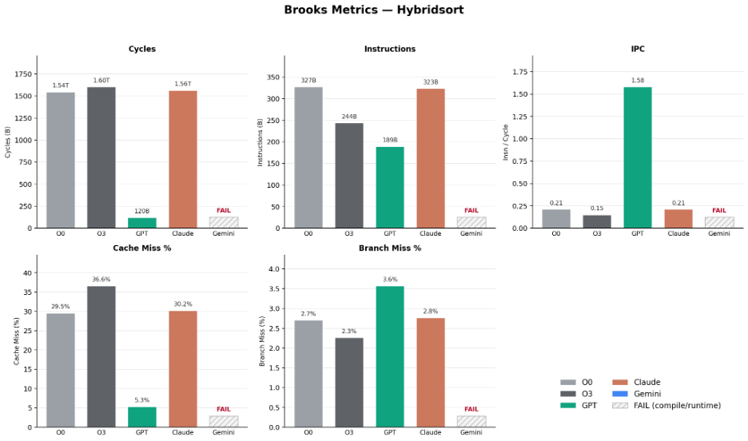
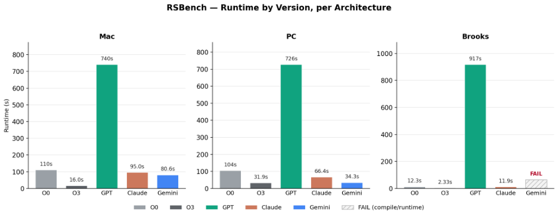

Systems & Performance Engineering
AI-Driven Compiler Optimization Study
An empirical study comparing AI-optimized C and C++ code against traditional GCC optimization across ARM and x86 architectures.
Project Overview
This project investigated whether AI coding tools could optimize high-performance C and C++ programs as effectively as traditional compiler optimization.
I compared code optimized by GPT, Claude, and Gemini against GCC -O0 and -O3 across four benchmark workloads. Each implementation was tested on multiple hardware architectures to determine whether AI-generated optimizations produced consistent performance gains.
Rather than evaluating performance using runtime alone, I also examined processor-level metrics including instructions per cycle, cache misses, and branch misses. This made it possible to identify cases where an optimization improved individual hardware metrics while making the program slower overall.
Methodology
The study used four high-performance computing benchmarks: Hybridsort, KMeans, SRAD, and RSBench. Each benchmark provided a different workload for evaluating the effects of code-level optimization.
Optimization Approaches
AI-generated versions were produced using GPT, Claude, and Gemini and compared against the original programs compiled with GCC -O0 and -O3.
Hardware Platforms
Tests were performed across ARM and x86 systems, including Apple Silicon, an Intel system, and a 64-core Linux server.
Performance Metrics
Runtime was measured across platforms, while Linux perf was used on the server to collect instructions per cycle, cache misses, and branch misses.
Evaluation
Results were compared across compiler settings, AI-generated implementations, benchmarks, and architectures to determine whether low-level improvements translated into faster execution.
Key Results
The experiments showed that improvements in individual microarchitectural metrics did not necessarily translate into faster application performance.
Runtime Regression
An AI-generated RSBench optimization removed effective OpenMP parallelism, producing an approximately 75× runtime regression on the 64-core Linux server.
Hybridsort IPC Improvement
GPT increased Hybridsort IPC from 0.21 to 1.58 on the 64-core Linux server, while still failing to outperform the GCC-optimized versions in runtime.
HPC Benchmarks
Performance was evaluated across Hybridsort, KMeans, SRAD, and RSBench rather than relying on the behavior of a single workload.
Performance Analysis
Hybridsort: Brooks Server Metrics

GPT increased instructions per cycle from 0.21 with GCC -O0 to 1.58 while also substantially reducing cache misses. Despite these improvements, the changes did not produce a corresponding runtime improvement, demonstrating that stronger microarchitectural metrics do not necessarily translate into faster overall execution.
RSBench: Runtime Across Architectures

RSBench exposed one of the study's most significant optimization failures. GPT replaced the OpenMP target/offload implementation with a CPU-resident event loop but inadvertently removed CPU parallelism in the process. On the 64-core Brooks server, runtime increased from roughly 10 seconds with GCC -O0 to approximately 749 seconds with the GPT-optimized implementation.
Key Takeaways
This project reinforced that code optimization cannot be evaluated using a single performance metric. Improvements in IPC, cache behavior, or instruction count can be misleading when changes to parallelism or program structure negatively affect total runtime.
The experiments also demonstrated the importance of validating AI-generated optimization across different workloads and hardware architectures. AI tools were capable of producing meaningful low-level improvements, but their results were less predictable than traditional compiler optimization and occasionally introduced significant performance regressions.
Most importantly, the project gave me hands-on experience with performance benchmarking, Linux hardware counters, parallel code, cross-architecture testing, and interpreting the relationship between software changes and processor-level behavior.